TAIWAN · SLOW TRAVEL · BY RAIL
搭一段車，
讀一座城。
從車站出發，以步行、公車與單車串起老街、古蹟、地方飲食和河岸風景。每一條路線，都把真實位置與交通查證放在美感之前。
開始找行程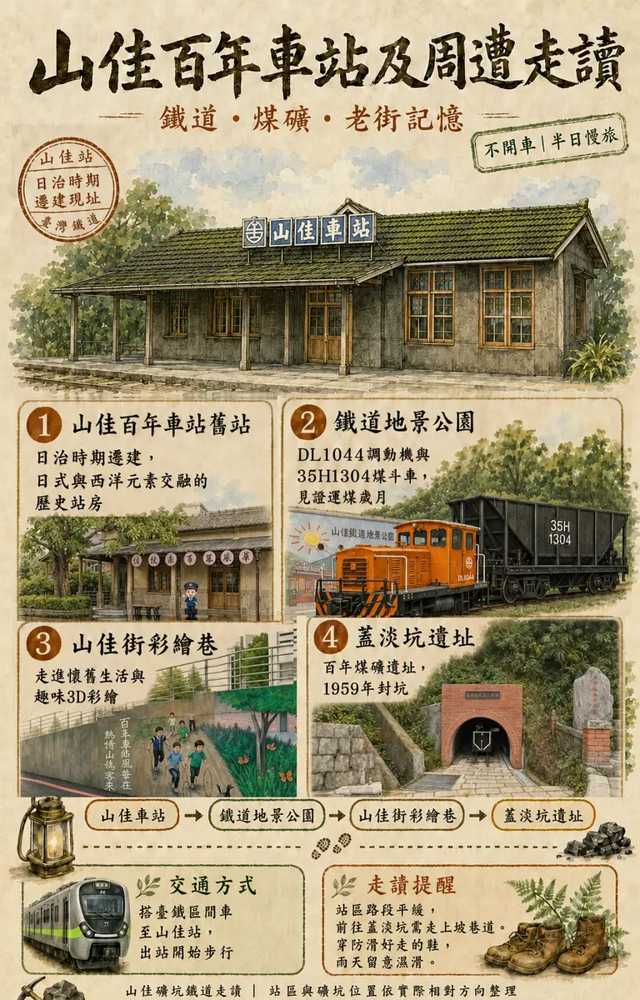
TRAVEL COLLECTION
依旅行方式找攻略
17 篇攻略
新北 · 樹林
山佳百年車站及周遭走讀
從舊站、鐵道地景公園到懷舊農村彩繪巷，閱讀礦業小鎮的時間痕跡。
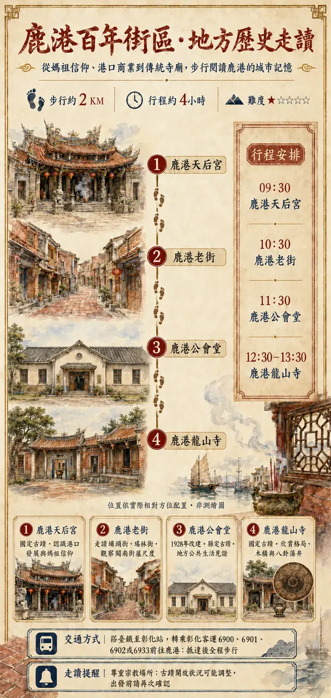
地方走讀彰化 · 鹿港
鹿港百年街區地方歷史走讀
循著天后宮、老街與龍山寺，從香火、街屋和木構看見港市發展。
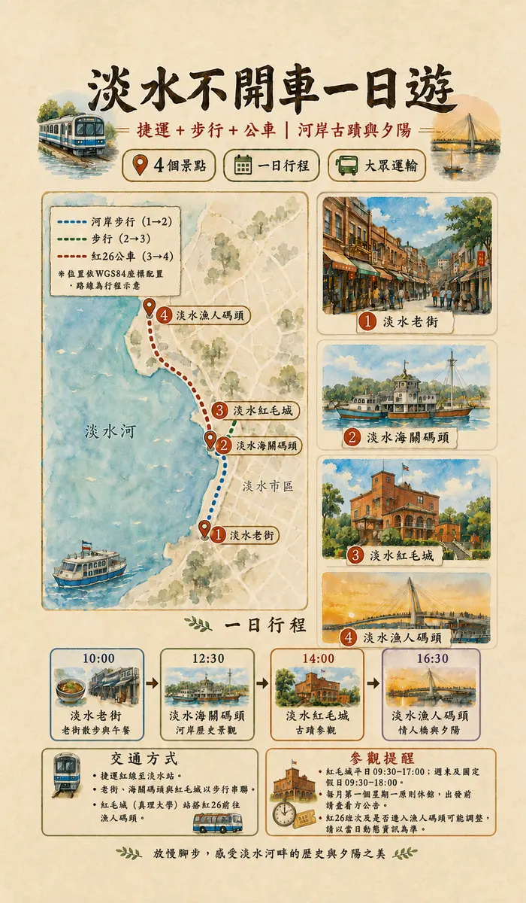
不開車新北 · 淡水
淡水不開車一日遊
捷運抵達後沿河岸慢行，以四個景點安排第一次到淡水的經典路線。
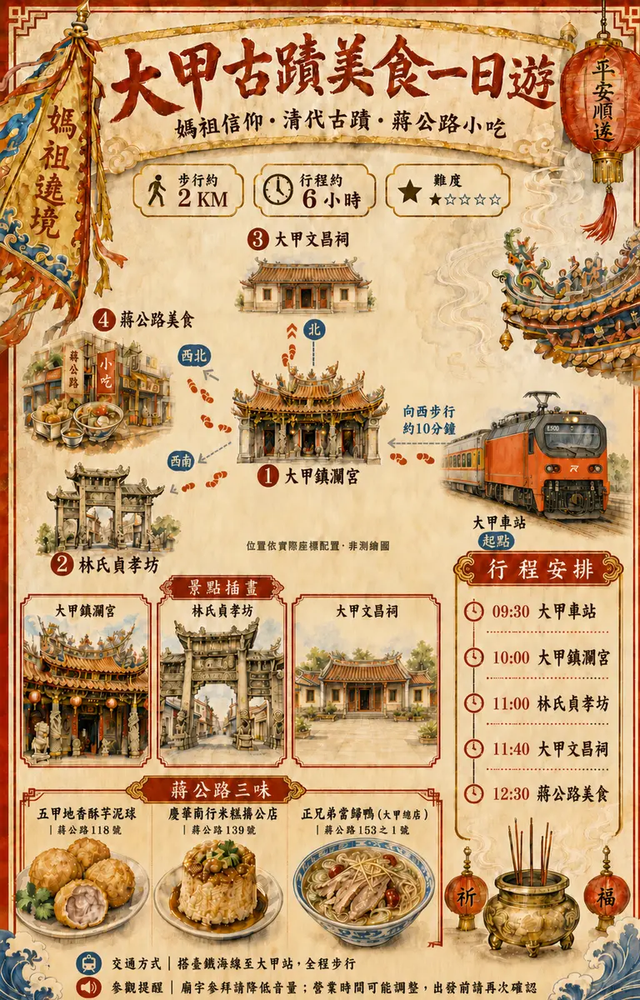
媽祖文化臺中 · 大甲
大甲古蹟一日遊
從大甲車站向西步行，串聯鎮瀾宮、林氏貞孝坊與文昌祠。
 舊城古蹟
舊城古蹟新竹 · 舊城區
新竹歷史走讀
三座國定古蹟與一座市定古蹟，沿舊城街廓理解城市信仰與治理。
 古城走讀
古城走讀新北 · 三峽
三峽歷史走讀
從歷史文物館、老街南段、祖師廟到李梅樹紀念館。
 蔬食地圖
蔬食地圖臺中 · 大甲
大甲素食地圖
整理車站周邊蔬食選擇；菜單、營業時間與公休日請以店家當日公告為準。
 生態單車
生態單車桃園 · 大溪
中庄吊橋生態單車一日遊
月眉人工濕地、山豬湖、中庄吊橋與調整池；橋長419公尺、寬2.5公尺。
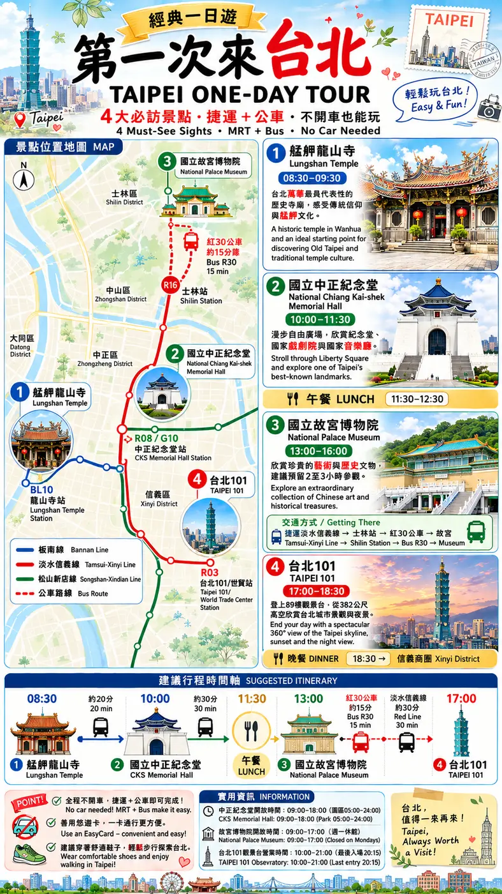
經典一日遊臺北 · 四大景點
第一次來台北經典一日遊
龍山寺、中正紀念堂、故宮與台北101，以捷運和公車完成。
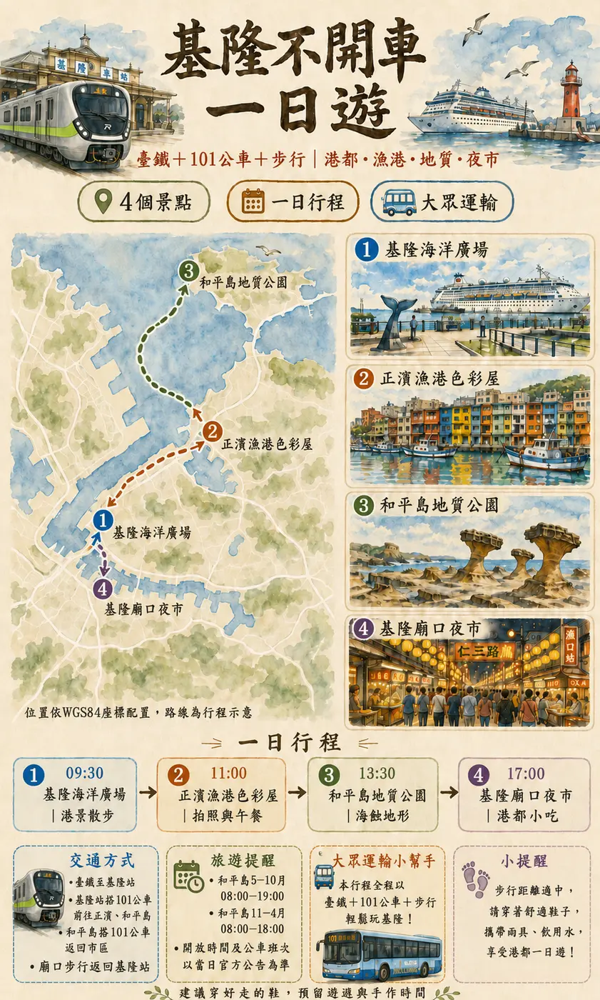
不開車基隆 · 港都
基隆不開車一日遊
從基隆車站出發，以步行與市區公車認識港都。
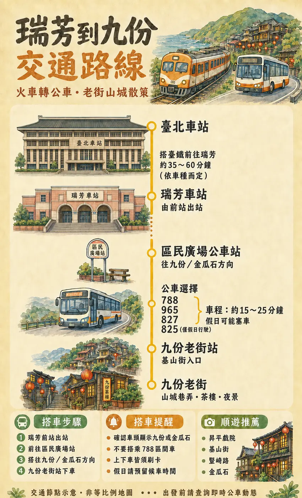
交通攻略新北 · 瑞芳九份
瑞芳到九份交通路線
整理臺鐵抵達瑞芳後，轉乘公車上九份的方式與候車重點。
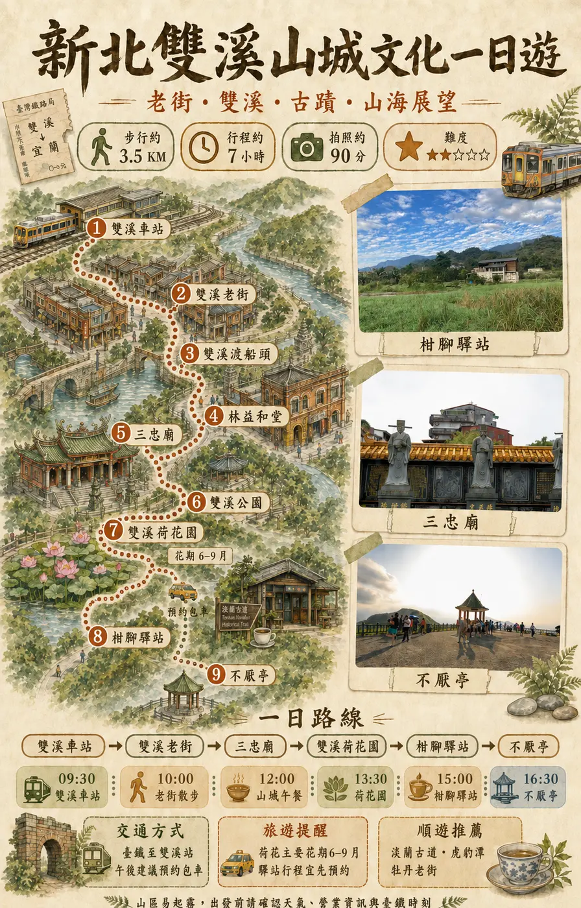
山城文化新北 · 雙溪
雙溪山城文化一日遊
從雙溪車站走入老街，再延伸柑腳驛站與地方聚落。
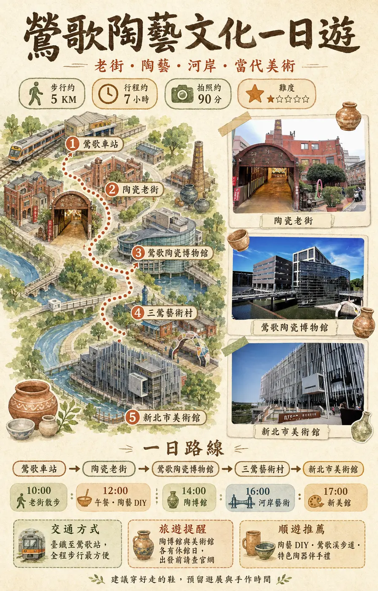
陶瓷文化新北 · 鶯歌
鶯歌陶瓷文化一日遊
陶瓷博物館、老街與手作體驗，從車站步行認識陶都。
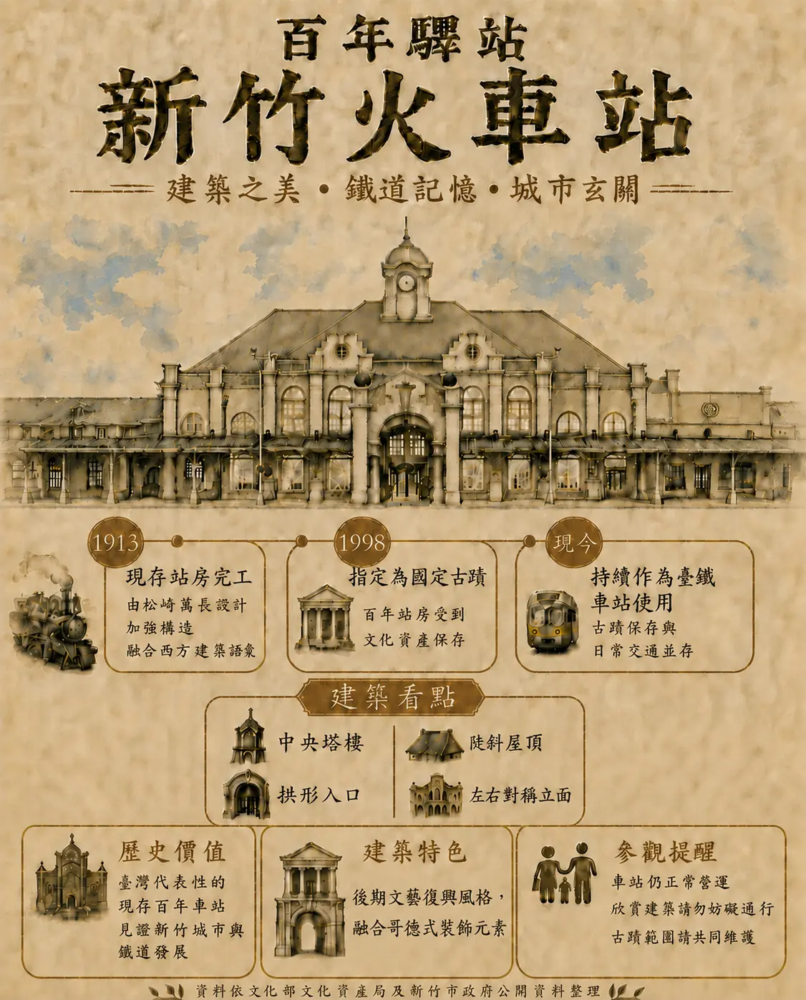
百年驛站新竹 · 車站
新竹火車站建築歷史
從1913年站房、建築語彙與文資身分閱讀百年驛站。
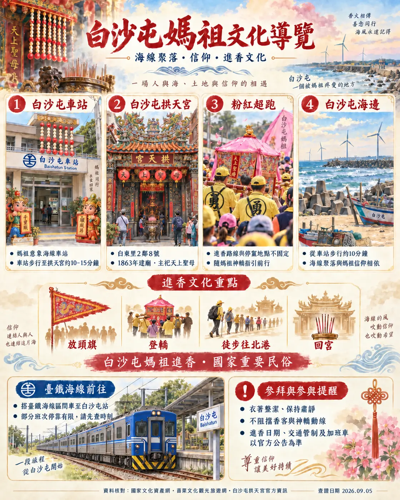
媽祖文化苗栗 · 通霄
白沙屯媽祖文化導覽
搭臺鐵到白沙屯，走訪拱天宮與海線聚落信仰地景。
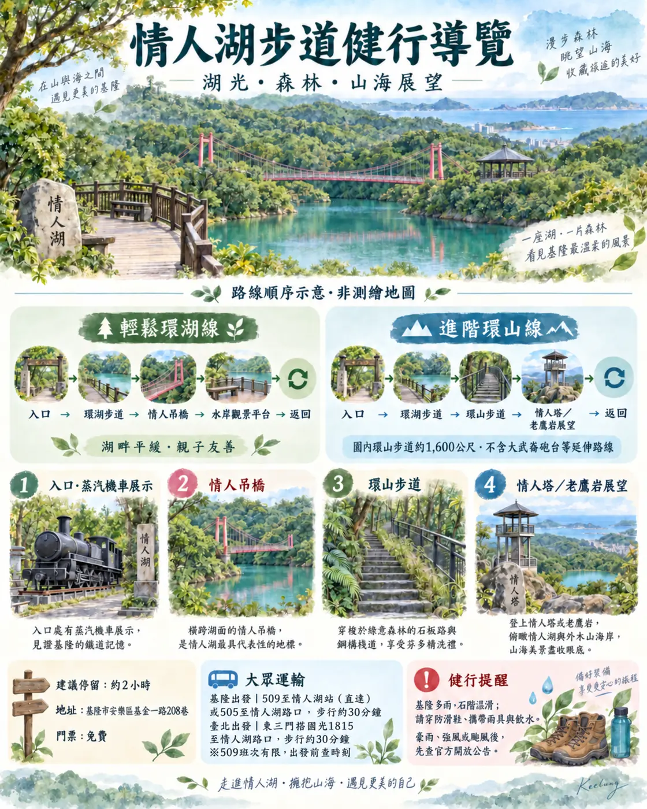
步道交通基隆 · 情人湖
情人湖步道
整理509、505及國光客運1815的到達方式與步道難度。
新北 · 平溪／瑞芳
平溪山城 × 深澳海景一日遊
上午深入平溪線山谷，午後回到瑞芳轉往深澳線，在八斗子迎接海景夕陽。
ACCURACY FIRST
不讓漂亮地圖取代真實路線
- 01官方資料優先
座標、道路、交通、文資身分與開放資訊，優先核對政府及營運單位。
- 02至少交叉查證
店名、地址與營業資訊不憑印象填寫；來源矛盾時明確保留。
- 03圖像只是導覽
插畫不冒充測繪圖或實景；列車、建築與地方尺度均以真實資料校對。
ABOUT THIS PROJECT
一個鐵道迷的地方旅行筆記
我喜歡從車站開始認識一座城市。這裡收錄以大眾運輸為主的行程，也記下老街、信仰、產業與日常飲食。網站持續更新；班次、票價、營業時間及現場管制，出發前請再次查看官方公告。